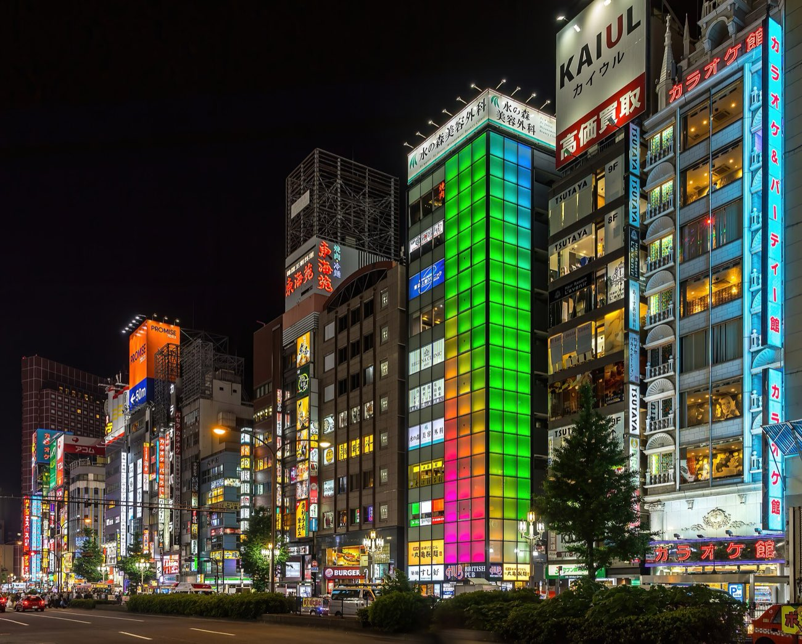
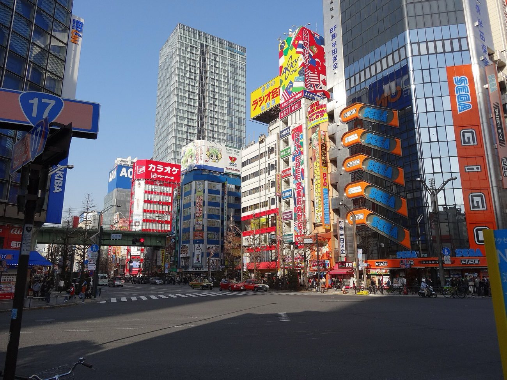
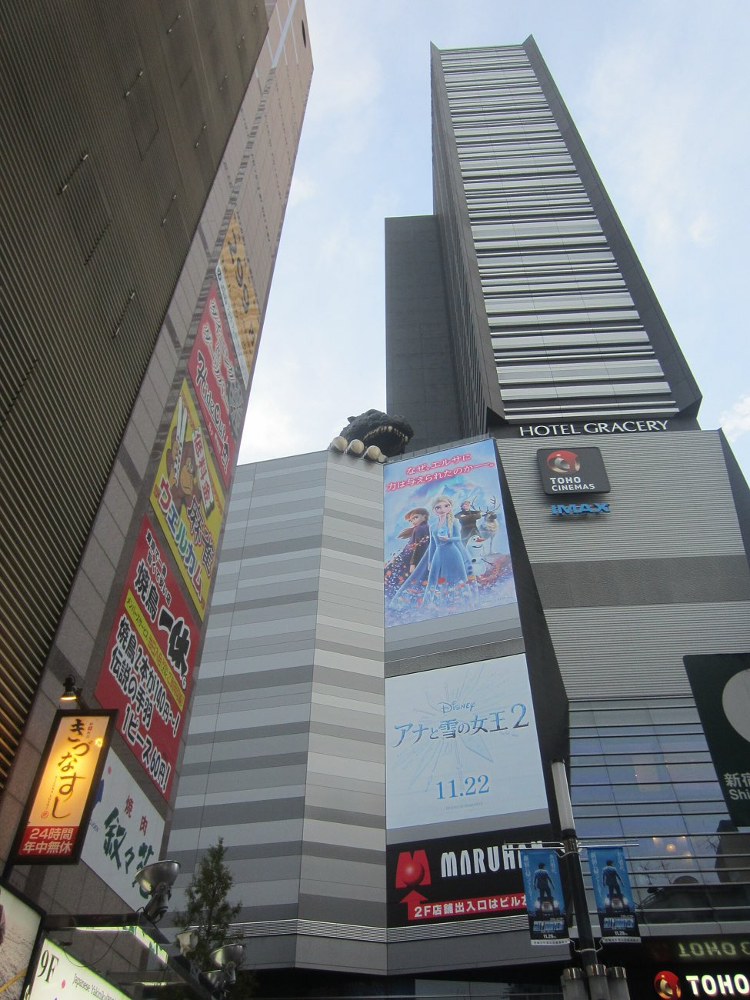
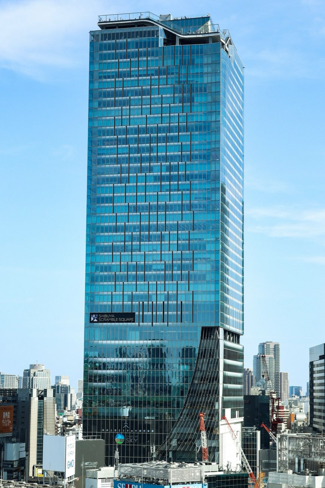
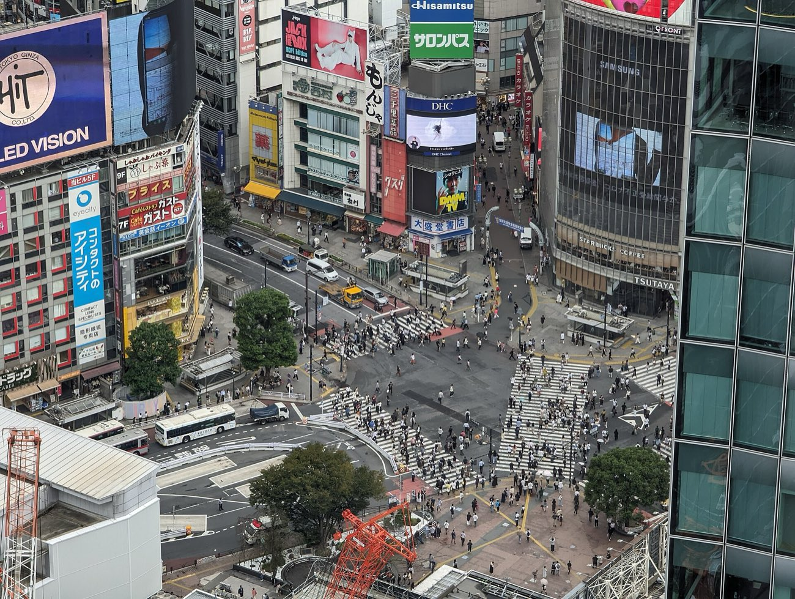

Land & Ease In
Wheels up from O'Hare Saturday morning, land at Narita 2:10 PM Sunday. Drop the bags in Shinjuku, then one rule: stay awake until dark and let the neon do the work.
Jetlag but Make It Neon
Ease-in night, but every stop is a gamer/anime pin instead of just wandering.


A multi-floor Sega-lineage arcade a minute from Omoide Yokocho, stacked with UFO catcher crane games, rhythm cabinets like maimai and Chunithm, and fighting-game setups. You feed 100-yen coins in, chase a prize plush, and get your first jetlagged taste of Japanese arcade culture without needing to think hard. Ground floors are all claw machines, upper floors get serious with music and versus games.
Quick facts
- Games ~100-200 yen per play
- Open late, often past midnight
- Near Seibu-Shinjuku / Shinjuku Station
- IC card or coins accepted

A life-size Godzilla head juts out over the Toho Cinemas building in the heart of Kabukicho and roars with lights and smoke on the hour after dark. It is free, gloriously stupid, and the definitive first-night Tokyo photo. Stand in the plaza below and look straight up; the 8th-floor Godzilla terrace has been closed to visitors since April 2026, so the street is the shot.
Quick facts
- Free to view from street
- Roars hourly after sunset
- Kabukicho, above Toho Cinemas
- Best shot ~8-9pm
- 8F terrace closed since Apr 2026


An open-air rooftop observation deck 229 meters up over Shibuya Crossing, with a glass-edge sky corner and hammocks under the stars. The night slot delivers the full sea-of-neon skyline with Tokyo Tower and Skytree glowing in the distance. Book the roughly 9pm timed entry online in advance because sunset slots sell out fast.
Quick facts
- Around 2,500 yen adult
- Book timed slot online early
- Atop Shibuya Scramble Square
- Rooftop closes in bad weather


The karaoke building made famous by Lost in Translation, where you get a private soundproof room instead of a public stage. The song books are loaded with anime openings, game themes, and Western hits, and no drinking is required to have fun. It is the perfect low-pressure ice-breaker for dad and son after a long flight.
Quick facts
- Around 1,000-2,000 yen per person/hour
- Private room, no strangers
- Steps from Shibuya Crossing
- Rooms 601/602 are the movie ones